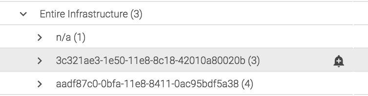
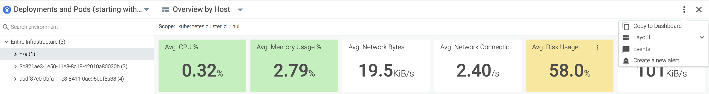
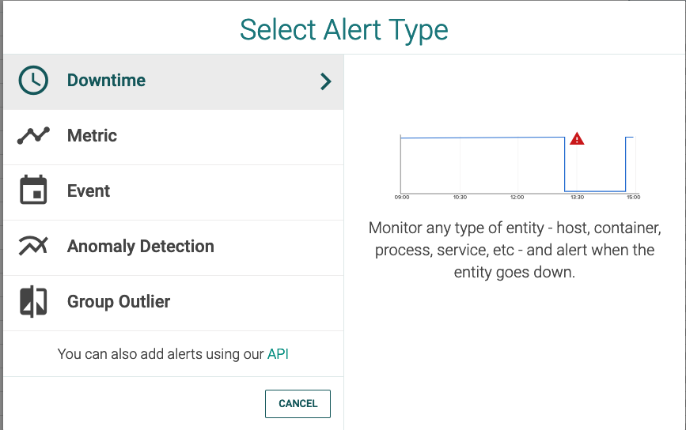
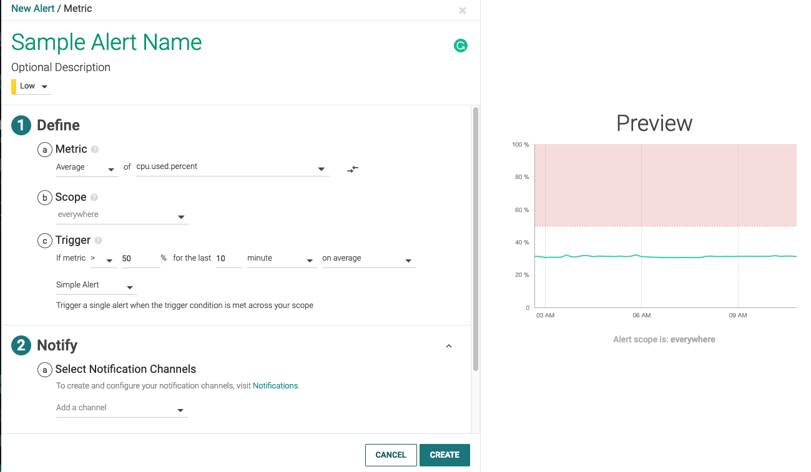
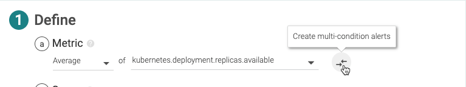
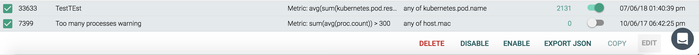
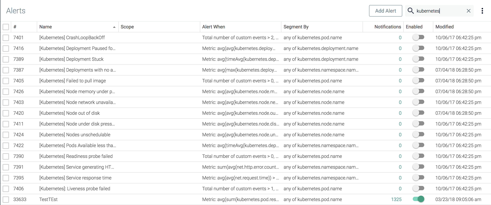
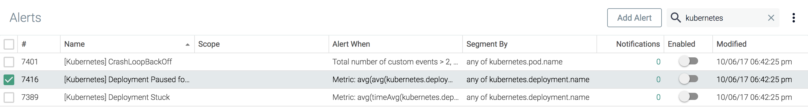
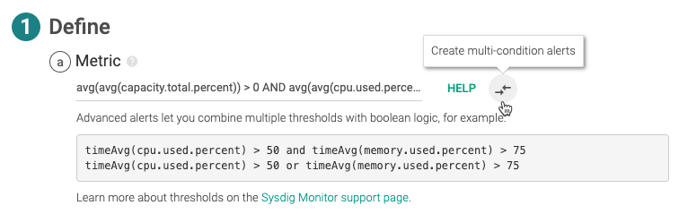

Alerts
Alert is the responsive component of Sysdig Monitor. Alerts notify you when an event/issue occurs that requires attention. Events and issues are identified based on changes in the metric values collected by Sysdig Monitor. The Alerts module displays out-of-the-box alerts and a wizard for creating and editing alerts as needed.
About Sysdig Alert
Sysdig Monitor can generate notifications based on certain conditions or events you configure. Using the alert feature, you can keep a tab on your infrastructure and find out about problems as they happen, or even before they happen with the alert conditions you define. In Sysdig Monitor, metrics serve as the central configuration artifact for alerts. A metric ties one or more conditions or events to the measures to take when the condition is met, or an event happens. Alerts work across Sysdig modules including Explore, Dashboard, Events, and Overview.
Alert Types
The types of alerts available in Sysdig Monitor:
Downtime: Monitor any type of entity, such as a host, a container, or a process, and alert when the entity goes down.
Metric: Monitor time-series metrics, and alert if they violate user-defined thresholds.
Event: Monitor occurrences of specific events, and alert if the total number of occurrences violates a threshold. Useful for alerting on container, orchestration, and service events like restarts and unauthorized access.
Anomaly Detection: Monitor hosts based on their historical behaviors, and alert when they deviate from the expected pattern.
Group Outlier: Monitor a group of hosts and be notified when one acts differently from the rest. Group Outlier Alert is supported only on hosts.
Out-of-the-box: Sysdig Monitor provides a set of alerts by default. Use it as it is or as a template to create your own.
Sysdig API: Use Sysdig's Python client to create, list, delete, update and restore alerts. See examples.
Guidelines for Creating Alerts
Steps | Description |
|---|---|
Decide What to monitor | Determine what type of problem you want to be alerted on. See Alert Types to choose a type of problem. |
Define how it will be monitored | Specify exactly what behavior triggers a violation. For example, Marathon App is down on the Kubernetes Cluster named Production for ten minutes. |
Decide Where to monitor | Narrow down your environment to receive fine-tuned results. Use Scope to choose an entity that you want to keep a close watch on. Specify additional segments (entities) to give context to the problem. For example, in addition to specifying a Kubernetes cluster, add a namespace and deployment to refine your scope. |
Define when to notify | Define the threshold and time window for assessing the alert condition.
A good analogy for multiple alerts is alerting on cities. For example, creating multiple alerts on San Francisco would trigger an alert which will include information such as the country that it is part of is the USA and the continent is North America.
|
Decide how notifications are sent | Alert supports customizable notification channels, including email, mobile push notifications, OpsGenie, Slack, and more. To see supported services, see Set Up Notification Channels. |
To create alerts, simply:
Choose an Alert Type.
Configure the notification channels you want to use for alert notification.
Note
Sysdig sometimes deprecates outdated metrics. Alerts that use these metrics will not be modified or disabled, but will no longer be updated. See Heuristic and Deprecated Metrics.
Configure Alerts
Use the Alert wizard to create or edit alerts.
Open the Alert Wizard
There are multiple ways to access the Alert wizard:
From the Explore Table
Select the
Alert (bell)icon beside an entity: Click the
More Options (three dots)icon for the table, and selectCreate a New Alert:
From Dashboards Panel
Click the More Options (three dots) icon for a panel, and select Create Alert.
 |
From Alerts Module
Click the
Add Alertbutton:
Select an existing alert (click directly or select the checkbox beside the alert) and click the
Editbutton:
From Overview (Beta)
Select a custom or an Infrastructure type event from the Events panel on the Overview screen. From the event description screen, Click Create Alert from Event.
 |
Create an Alert
Configure notification channels before you begin, so the channels are available to assign to the alert. Optionally, you can add a custom subject and body information into individual alert notifications.
Enter Basic Alert Information
Configuration slightly defers for each Alert type. See respective pages to learn more. This section covers general instructions to help you acquainted with and navigate the Alerts user interface.
To configure an alert, Open the Alert Wizard and set the following parameters:
(Setup):
Type:Select the desired Alert Type.
 Each type has different parameters, but they follow the same pattern:
Name:Specify a meaningful name that can uniquely represent the Alert that you are creating. For example, the entity that alert targets, such asProduction Cluster Failed Scheduling pods.Description(optional): Briefly expand on the alert name or alert condition to give additional context for the recipient.Priority: High, Medium, Low,andInfoare reflected in theEventslist, where you can sort by the severity of the Event/Alert.Parameters in
Define,Notify, andActsections

(1) Define:
Metric: Select a metric or entity that this alert will monitor. You also define how the data is aggregated, such as avg, max, min or sum. Metrics are applied to a group of items (group aggregation).
To alert on multiple metrics using boolean logic, click Create multi-condition alerts. See Multi-Condition Alerts.
|  |
Scope: Everywhere, or a more limited scope to filter a specific component of the infrastructure monitored, such as a Kubernetes deployment, a Sysdig Agent, or a specific service.Trigger: Boundaries for assessing the alert condition, and whether to send a single alert or multiple alerts. Supported time scales are minute, hour, or day.Single alert:Single Alert fires an alert for your entire scope.Multiple alerts:Multiple Alert fires if any or every segment breaches the threshold at once.Multiple alerts are triggered for each segment you specify. The specified segments will be represented in alerts. The higher the number of segments the easier to uniquely identify the affected entities.
For detailed description, see respective sections on Alert Types.
(2) Notify
Notification Channel:Select from the configured notification channels in the list. Supported channels are:Email
Slack
Amazon SNS Topic
Opsgenie
Pagerduty
VictorOps
Webhook
Notification Options:Set the time interval at which multiple alerts should be sent.Format Message:If applicable, add message format details. See Customize Notifications.
(3) Act
(Optional): Configure a Sysdig capture. See also Captures.
Sysdig capture files are not available for
Event Alerts.
Click
CreateorSave.
Optional: Customize Notifications
You can optionally customize individual notifications to provide context for the errors that triggered the alert. All the notification channels support this added contextual information and customization flexibility.
Modify the subject, body, or both of the alert notification with the following:
Plaintext: A custom message stating the problem. For example, Stalled Deployment.
Hyperlink: For example, URL to a Dashboard.
Dynamic Variable: For example, a hostname. Note the conventions:
All variables that you insert must be enclosed in double curly braces, such as
{{file_mount}}.Variables are case sensitive.
The variables should correspond to the segment values you created the alert for. For example, if an alert is segmented by
host.hostNameandcontainer.name, the corresponding variables will be{{host.hostName}}and{{container.name}}respectively, and no other segment variables are allowed in the notification subject and body.Notification subjects will not show up on the Event feed.
Using a variable that is not a part of the segment will trigger an error.
The segment variables used in an alert are turned to the current system values upon sending the alert.
The body of the notification message contains a Default Alert Template. It is the default alert notification generated by Sysdig Monitor. You may add free text, variables, or hyperlinks before and after the template.
You can send a customized alert notification to the following channels:
Email
Slack
Amazon SNS Topic
Opsgenie
Pagerduty
VictorOps
Webhook
Manage Alerts
Alerts can be managed individually, or as a group, by using the checkboxes on the left side of the Alert UI, and the customization bar at the bottom. The columns of the table can also be configured, to provide you with the necessary data for your use cases. Select a group of alerts and perform several batch operations, such as deleting, enabling, disabling, or exporting to a JSON object. Select individual alerts to perform tasks such as creating a copy for a different team.
Enable/Disable Alerts
Alerts can be enabled or disabled using the customization bar. You can perform these operations on a single alert or on multiple alerts as a batch operation.
From the Alerts module, check the boxes beside the relevant alerts.
Click the
EnableorDisableas necessary.
The Enable /Disable buttons are only visible if a relevant alert is selected. For example, in the image below, only the Disable button is visible, as the alert selected is currently enabled:
 |
In the image below, both buttons are visible, as an enabled alert and a disabled alert are visible:
|  |
Export Alert JSON
A JSON file can be exported to a local machine, containing JSON snippets for each selected alert:
Click the checkboxes beside the relevant alerts to be exported.
Click the
Export JSONbutton on the customization bar:
Copy an Alert
Alerts can be copied within the current team to allow for similar alerts to be created quickly, or copied to a different team to share alerts.
Copy an Alert to the Same Team
To copy an alert within the current team:
Click the checkbox beside the alert to be copied.
Click the
Copybutton on the customization bar:
Check that the
Current Teamoption is selected.Rename the alert, and click the
Copy and Openbutton to save the changes.
Copy an Alert to a Different Team
To copy an alert within the current team:
Click the checkbox beside the alert to be copied.
Click the
Copybutton on the customization bar.Select the
Other Team(s)option.Open the
Select Teamdrop-down menu, and select the teams that the alert should be copied to:
Rename the alert, and click the
Send Copybutton to save the changes.
Delete Alerts
To delete one or more alerts:
Click the checkboxes beside the relevant alerts to be deleted.
Click the
Deletebutton on the customization bar.Click the
Yes,Delete Alertsbutton to confirm the changes.
Configure the Alerts Table Columns
To configure the visible columns:
From the Alerts module, click the
Table Columns Configuration(three dots) icon.
Check the boxes beside each desired column.
Click the
Applybutton to save the changes, theRestorebutton to return the table to the original configuration, or theCancelbutton to revert to the previous configuration.
Search for an Alert
The Alerts table can be searched using partial or full strings. For example, the search below displays only events that contain kubernetes:
|  |
Edit an Existing Alert
To edit an existing alert:
Click the checkbox beside the alert:
 Click the
Editbutton on the customization bar:
Edit the alert, and click the
Savebutton to confirm the changes.
Multi-Condition Alerts
Multi-condition alerts are advanced alert threshold created on complex conditions. To do so, you define alert thresholds as custom boolean expressions that can involve multiple conditions. Click Create multi-condition alerts to enable adding conditions as boolean expressions.
|  |
These advanced alerts require specific syntax, as described in the examples below.
Format and Operations
Each condition has five parts:
Metric Name : Use the exact metric names. To avoid typos, click the
HELPlink to access the drop-down list of available metrics. Selecting a metric from the list will automatically add the name to the threshold expression being edited.Group Aggregation (optional): If no group aggregation type is selected, the appropriate default for the metric will be applied (either sum or average). Group aggregation functions must be applied outside of time aggregation functions.
Time aggregation : It's the historical data rolled up over a selected period of time.
Operator: Both logical and relational operators are supported.
Value: A static numerical value against which a condition is evaluated.
The table below displays supported time aggregation functions, group aggregation functions, and relational operators:
Time Aggregation Function | Group Aggregation Function | Relational Operator |
|---|---|---|
timeAvg() | avg() | = |
min() | min() | < |
max() | max() | > |
sum() | sum() | <= |
>= | ||
!= |
The format is:
condition1 AND condition2 condition1 OR condition2 NOT condition1
The order of operations can also be altered via parenthesis:
NOT (condition1 AND (condition2 OR condition3))
Conditions take the following form:
groupAggregation(timeAggregation(metric.name)) operator value
Example Expressions
Several examples of advanced alerts are given below:
timeAvg(cpu.used.percent) > 50 AND timeAvg(memory.used.percent) > 75 timeAvg(cpu.used.percent) > 50 OR timeAvg(memory.used.percent) > 75 timeAvg(container.count) != 10 min(min(cpu.used.percent)) <= 30 OR max(max(cpu.used.percent)) >= 60 sum(file.bytes.total) > 0 OR sum(net.bytes.total) > 0 timeAvg(cpu.used.percent) > 50 AND (timeAvg(mysql.net.connections) > 20 OR timeAvg(memory.used.percent) > 75)